산업안전기사 (2006-03-05 기출문제)
1과목: 안전관리론
1. 안전관리의 조직형태 중에서 경영자(수뇌부)의 지휘와 명령이 위에서 아래로 하나의 계통이 되어 잘 전달되며 소규모 기업에 적합한 방식은?
- staff 방식
- line 방식
- line-staff 방식
- round 방식
(정답률: 86%)

2. 관리자 교육 훈련(MTP)시간으로 가장 적당한 것은?
- 20시간(4시간×5회)
- 20시간(2시간×10회)
- 40시간(4시간×10회)
- 40시간(2시간×20회)
(정답률: 43%)
3. 적성의 요인이 아닌 것은?
- 인간성
- 지능
- 인간의 개인차
- 흥미
(정답률: 46%)
4. 어느 사업장에서 해당 년도에 총 660명의 재해자가 발생 하였다. 하인리히(Heinrich)의 법칙에 의하면 경상해는 몇명인가?
- 53명
- 58명
- 600명
- 602명
(정답률: 85%)
5. 집단관리의 기본적 요소에 속하지 않는 것은?
- 감정
- 행위범위
- 지위와 역할
- 목표와 무관심
(정답률: 57%)
6. 연천인율 45인 사업장의 빈도율은 얼마인가?
- 18.75
- 21.26
- 25.43
- 31.52
(정답률: 71%)
7. 안전교육 중 앞의 학습이 뒤의 학습에 미치는 영향을 무엇이라 하는가?
- 반사(reflex)
- 반응(reaction)
- 전이(transfer)
- 효과(effect)
(정답률: 76%)
8. 다음 중 안전보건관리 책임자를 두어야 하는 사업은?
- 상시근로자 50인 이상을 사용하는 사업
- 총 공사금액이 20억원 이상인 공사를 시행하는 건설업
- 상시근로자 50인 미만이면서 목재 및 나무제품 제조업
- 상시 근로자수와 관계없는 제1차 금속산업
(정답률: 52%)
9. 추락을 방지하기 위해서 사용하는 안전대는 사용방법에 따라서 벨트식(B식)과 안전그네식(H식)으로 나누어지며 사용구분에 따라 등급이 정해진다. 사용구분이 1개걸이 U자걸이 공용일 경우는 등급이 다음 중에서 어느 것일까?
- 1종
- 2종
- 3종
- 4종
(정답률: 33%)
10. 일 중심형으로 업적에 대한 관심은 높지만 인간관계에 무관심한 리더십이 타입은?
- 이상형
- 권력형
- 방임형
- 중도형
(정답률: 75%)
11. 안전교육의 형태 중 존 듀이가 주장하는 형식적 교육에 해당하는 것은?
- 가정안전교육
- 사회안전교육
- 학교안전교육
- 부모안전교육
(정답률: 70%)
12. 다음 중 개인 안전지도 방법에 부적당한 것은?
- O.J.T
- off J.T
- Follow-up
- 카운셀링
(정답률: 66%)
13. 재해예방 4원칙이 아닌 것은?
- 손실 우연의 원칙
- 예방 가능의 원칙
- 원인 연계의 원칙
- 사고 예방의 원칙
(정답률: 60%)
14. 안전 보건 표지의 종류와 형태가 잘못 짝지워진 것은?
- : 응급구호표지
- : 유해물질경고
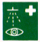
: 세안장치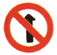
: 출입금지
(정답률: 48%)
15. 위생-동기요인에 대한 다음 설명 중 잘못된 것은?
- 위생요인은 Maslow의 욕구단계에서 생리적, 안전, 사회적 욕구와 비슷하다.
- 동기요인은 McGreger의 X이론과 비슷하다.
- 위생요인은 동물적인 욕구를 반영하는 것이다.
- 동기요인은 자아실현을 하려는 인간의 독특한 경향을 반영하는 것이다.
(정답률: 70%)
16. 참가자가 다수인 경우에 전원을 토의에 참가시키기 위한 방법으로 소집단을 구성하여 회의를 진행 시키는데 일명6-6 회의라고도 하는 것은?
- Symposium
- Buzz session
- Forum
- Panel discussion
(정답률: 84%)
17. 통계에 의한 재해 분석방법 중 맞는 것이 아닌 것은?
- 파레토도
- 위험분포도
- 특성요인도
- 크로스 분석
(정답률: 47%)
18. Lewin.K 이 인간의 행동을 식으로 표현한 것 중 맞는 것은? (단, B : behavior, P : person, E : environment,f : function)
- B = f( PㆍE )
- f = B( PㆍE )
- P = f( BㆍE )
- E = f( PㆍE )
(정답률: 85%)
19. 산업안전보건법상 관리감독자가 수행하여야 할 업무가 아닌 것은?
- 기계·기구 또는 설비의 점검 및 이상 유무 확인
- 소속 근로자의 작업복 보호구 및 방호 장치 점검
- 산업재해 발생 보고 및 응급조치
- 산업재해 조사와 재발방지를 위한 지도·조언
(정답률: 46%)
20. 다음의 직무분석 방법 중 감독자, 동료 근로자, 그 외의 이 직무를 잘 아는 사람으로부터 성공적이지 못한 근로자와 성공적인 근로자를 구별해 내는 행동을 밝히려는 목적으로 사용되는 것은?
- 면접
- 직접관찰
- 결정적 사건의 기록
- 체계적인 일지 작성
(정답률: 40%)
2과목: 인간공학 및 시스템안전공학
21. 정보가 음성으로 전달되어야 효과적인 때는 어느 경우 인가?
- 정보가 긴급할 때
- 정보가 어렵고 추상적일 때
- 정보의 영구적인 기록이 필요할 때
- 여러 종류의 정보를 동시에 제시해야 할 때
(정답률: 75%)
22. 다음 그림의 설명 중 틀린 것은?
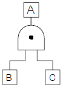
- P(A) = P(B) × P(C)
- B와 C가 동시에 발생하지 않으면 A는 발생하지 않는다
- 그리참조 AND를 나타낸다.
- 논리합의 경우이다.
(정답률: 58%)
23. 시스템 안전분석법 중 예비위험분석의 식별된 4가지 사고 카테고리에 해당되지 않는 것은?
- 선별적 상태
- 중대 상태
- 무시가능 상태
- 파국적 상태
(정답률: 53%)
24. 인간과 기계의 기본 기능은 감지, 정보저장, 정보처리 및 의사결정, 행동 등 4가지로 구분할 수 있다. 다음 중 행동기능에 속하는 것은?
- 음파탐지기
- 추론
- 결심
- 음성
(정답률: 61%)
25. 작업강도는 에너지 대사율(RMR)로서 측정될 수 있다.사무작업이나 감시작업 등의 중(中)작업의 에너지 대사율은?
- 0~1RMR
- 2~4RMR
- 4~7RMR
- 7~9RMR
(정답률: 57%)
26. 전기적 생리신호 측정가운데 근육의 활동도를 측정하는 방법은?
- ECG
- EMG
- EEG
- GSR
(정답률: 64%)
27. 일반적으로 완전 암조응에 걸리는 시간은?
- 5~10분
- 10~20분
- 30~40분
- 50~60분
(정답률: 60%)
28. n개의 요소를 가진 병렬 시스템에 있어 요소의 수명(MTTF)이 지수 분포를 따를 경우, 시스템의 수명은?
- MTTF×n
- MTTF× 1/n
- MTTF×(1+1/2+...+1/n)
- MTTF×(1×1/2×...×1/n)
(정답률: 69%)
29. 사고예방 및 최소화의 조치는 다음 4가지 항을 어떤 순서로 하는가?
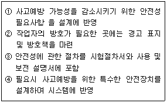
- ①-②-③-④
- ①-④-③-②
- ①-③-④-②
- ①-④-②-③
(정답률: 36%)
30. 복잡한 시스템을 설계, 가동하기 전의 구상단계에서 시스템의 근본적인 위험성을 평가하는 가장 기초적인 위험도 분석 기법은 무엇인가?
- 결함수 분석법(FTA)
- 예비위험분석(PHA)
- 고장의 형과 영향분석(FMEA)
- 운용 안전성 분석(OSA)
(정답률: 68%)
31. 실내 공간의 조명을 설계할 때, 조명에 대한 반사율이 낮은 면에서 높은 순으로 올바르게 설계된 것은?
- 바닥 - 창문 - 가구 - 벽
- 바닥 - 가구 - 벽 - 천장
- 창문 - 바닥 - 가구 - 벽
- 벽 - 천장 - 가구 - 바닥
(정답률: 75%)
32. 어떤 엘리베이터의 강철 로프는 세 가닥이지만, 실제로 두 가닥 이상만 정상이면 엘리베이터의 정상 작동은 확보된 다. 강철 로프 한 가닥의 신뢰도가 r이라 할 때 엘리베이터의 정상작동 확률은?
- r2(1-r)+r3
- 3r2(1-r)+r3
- r2+r3
- 1-(1-r)3
(정답률: 49%)
33. 인간이 기계를 조종하여 임무를 수행하여야 하는 인간-기계체계가 있다. 이 체계의 신뢰도가 0.8 이상 이어야 하며, 인간의 신뢰도는 0.9라 하면 기계의 신뢰도는 얼마이상 이어야 하는가?
- 0.1
- 0.72
- 0.89
- 1.125
(정답률: 47%)
34. 여러 사람이 사용하는 의자의 좌면높이는 어떤 기준으로 설계해야 하는가?
- 5% 오금높이
- 50% 오금높이
- 75% 오금높이
- 95% 오금높이
(정답률: 57%)
35. 체계 설계에서 인간공학의 가치와 관계가 가장 먼 것은?
- 인력 이용율의 향상
- 훈련 비용의 절감
- 체계제작비의 절감
- 사고 및 오용으로부터의 손실 감소
(정답률: 50%)
36. 위험구역의 울타리 설계시 인체 측정자료 중 적용해야 할 인체치수로 가장 적절한 것은?
- 구조적 인체 측정치
- 인체측정 최대치
- 인체측정 평균치
- 인체측정 최소치
(정답률: 68%)
37. 회전운동을 하는 조종구와 같은 조종장치의 반경이 10cm이고 30° 만큼 움직였을 때, 선형표시장치의 눈금이 4.84cm 움직였다. 이때의 통제표시비는?
- 1.256
- 1.08
- 0.965
- 0.833
(정답률: 45%)
38. FTA의 논리기호 중 OR 게이트는?
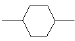
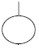
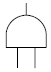
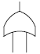
(정답률: 72%)
39. 산업재해 발생의 배경에 대한 설명 중 잘못된 것은?
- 작업환경과 개인의 잘못간의 연쇄성
- 재해관련 직·간접비용 발생의 법칙성
- 물적원인과 인적원인 발생 상호간의 단속성
- 준 사고(near miss)와 중대사고 발생 비율간의 법칙성
(정답률: 34%)
40. 인간의 에러 중 불필요한 작업 또는 절차를 수행하므로써 기인한 에러는?
- Omission error
- Commission error
- Sequential error
- Extraneous error
(정답률: 53%)
3과목: 기계위험방지기술
41. 하중이 정격을 초과하였을 때 하중의 권상을 정지시키는 장치는?
- 비상정지장치
- 브레이크장치
- 과부하방지장치
- 와이어로프 후크장치
(정답률: 70%)
42. 보일러의 제어장치가 아닌 것은?
- 압력방출장치
- 압력제한스위치
- 언로드밸브
- 고저수위조절장치
(정답률: 72%)
43. 포크리프트 운전 중의 주의사항에서 틀린 것은?
- 정해진 하중이나 높이를 초과하는 적재는 하지 않는다
- 운전자 외에 한사람은 탑승할 수 있다.
- 급격한 후퇴는 피한다.
- 견인시는 반드시 견인봉을 사용한다.
(정답률: 77%)
44. 회전중인 연삭숫돌이 근로자에게 위험을 미칠 우려가 있을 때는 덮개를 설치하고 연삭숫돌의 최고 사용 회전속도를 초과하여 사용하게 하여서는 안된다. 연삭숫돌에 덮개를 설치해야 할 대상은? (단, 산업안전보건법에 준함)
- 연삭숫돌의 직경이 3cm 이상인 것
- 연삭숫돌의 직경이 4cm 이상인 것
- 연삭숫돌의 직경이 5cm 이상인 것
- 연삭숫돌의 직경이 9cm 이상인 것
(정답률: 64%)
45. 보일러의 탱크(tank)가 폭발하였다. 이 파괴 사고와 관련이 없는 파괴형태는?
- Brittle fracture
- Fatigue fracture
- Environmental fracture
- Creep
(정답률: 29%)
46. 교류아크 용접에서 지동시간이란?
- 홀더에 용접기 출력측의 무부하 전압이 발생한 후 주접점이 개방될 때까지의 시간
- 용접봉을 피용접물에 접촉시켜 전격 방지 장치의 주접점이 폐로될 때까지의 시간
- 홀더에 용접기 출력측의 무부하 전압이 발생한 후 주접점이 닫힐 때까지의 시간
- 용접봉을 피용접물에 접촉시켜 전격방지 장치의 주접점이 개방될 때까지의 시간
(정답률: 43%)
47. 다음 중 시계는 양호하나 크랭크 프레스에는 사용이 제한되는 것은?
- 게이트 가드
- 양수 조작식 방호장치
- 벨트 컨베이어식 배출 장치
- 광전자식 안전장치
(정답률: 52%)
48. 어떤 로프의 최대하중이 600kg이고, 정격하중은 100kg이다. 이때 안전계수는 얼마인가?
- 5
- 6
- 7
- 8
(정답률: 79%)
49. 가스용접 작업시 일어나는 현상인 산소가 반대로 흐르는 원인으로 가장 거리가 먼 것은?
- 팁의 막힘
- 노즐의 불결
- 팁과 모재의 접촉
- 토치의 기능불량
(정답률: 38%)
50. 크레인 로프에 2ton의 중량을 걸어 20m/sce2 가속도로 감아올릴 때 로프에 걸리는 총하중은 얼마인가?
- 682kg
- 6082kg
- 7082kg
- 7802kg
(정답률: 55%)
51. 경질합금드릴을 장착한 탁상식 드릴기계를 사용하여 알루미늄합금에 구멍을 가공하려고 한다. 적정 작업조건으로 구성된 것은?
- 절삭속도 260m/min, 선단각 120°
- 절삭속도 55m/min, 선단각 118°
- 절삭속도 55m/min, 선단각 130°
- 절삭속도 100m/min, 선단각 118°
(정답률: 41%)
52. 산업용 로봇은 작업 시작전에 어떤 사항을 점검하는가?
- 과부하방지장치의 이상유무
- 압력제한 스위치 등의 기능의 이상유무
- 외부전선 피복 또는 외장의 손상유무
- 권과방지장치의 이상유무
(정답률: 65%)
53. 동력 전도 부분의 전방 30cm 위치에 일방 평행 보호망을 설치하고자 한다. 보호망의 최대 개구 간격은 얼마로 하여야 하는가?
- 36mm 이하
- 37.5mm 이하
- 51mm 이하
- 56mm 이하
(정답률: 48%)
54. 다음 그림은 로프로 중량물을 들어올릴 때 부하가 걸리는 상태이다. 이때 θ 는 몇 도인가?
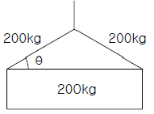
- 45°
- 30°
- 15°
- 10°
(정답률: 52%)
55. 연삭기 및 평삭기의 테이블, 형삭기, 램 등에 대한 안전장치는?
- 권과방지장치
- 덮개
- 동력차단장치
- 보호망
(정답률: 69%)
56. 다음 중 마찰 프레스(friction press)에 가장 적합한 안전장치는?
- 광전자식
- 손쳐내기식
- 게이트가드식
- 양수조작식
(정답률: 42%)
57. 드릴작업에서 칩의 제거방법으로 가장 안전한 방법은?
- 회전을 중지시킨 후 손으로 제거
- 회전을 중지시킨 후 솔로 제거
- 회전시키면서 막대로 제거
- 회전시키면서 솔로 제거
(정답률: 77%)
58. 용접장치의 산업안전 기준에 맞는 것은?
- 아세틸렌 용접장치의 발생기실을 옥외에 설치한 때에는 그 개구부를 다른 건축물로부터 1m 이상 떨어지도록 하여야 한다.
- 가스집합장치로부터 10m 이내의 장소에서는 화기의 사용을 금지한다.
- 아세틸렌 발생기에서 10m이내 또는 발생기실에서4m 이내의 장소에서는 흡연행위를 금지시킨다.
- 아세틸렌 용접장치를 사용하여 금속의 용접ㆍ용단 또는 가열작업을 하는 경우에는 게이지 압력이 127킬로 파스칼을 초과하는 압력의 아세틸렌을 발생시켜 사용해서는 아니 된다.
(정답률: 75%)
59. 작업자가 기계를 잘못 취급하여 불안전 행동이나 실수를 하여도 기계설비의 안전 기능이 작용되어 재해를 방지할수 있는 기능은?
- 페일세이프 기능
- 풀푸르프 기능
- 연동잠김 기능
- 자동송급출 기능
(정답률: 67%)
60. 와이어로프 “6×19×G.S×A.B.G.E×500L"로 표시되어 있는데 여기서 6은 무엇을 뜻하는가?
- grease종류
- 소선의 수량
- 스트랜드의 가닥수
- 소선 인장강도
(정답률: 49%)
4과목: 전기위험방지기술
61. 전기작업에서 안전을 위한 일반 사항이 아닌 것은?
- 단로기의 개폐는 차단기의 차단 여부를 확인한 후에 한다.
- 전로의 충전여부 시험은 검전기를 사용한다.
- 전선을 연결할 때 전원 쪽을 먼저 하고 연결해 간다.
- 첨가전화선에는 사전에 접지 후 작업을 하며 끝난 후 반드시 제거해야 한다.
(정답률: 78%)
62. 인화성 가스 또는 인화성 액체의 용기류가 부식, 열화 등으로 파손되어 가스 또는 액체가 누출할 염려가 있는 경우의 방폭지역을 무엇이라 하는가?
- 0종장소
- 1종장소
- 2종장소
- 비방폭지역
(정답률: 42%)
63. 정전작업시 조치사항으로 부적합한 것은?
- 개로된 전로의 충전여부를 검전기구에 의하여 확인 한다.
- 개폐기에 시건장치를 하고 통전금지에 관한 표지판은 제거한다.
- 예비 동력원의 역송전에 의한 감전의 위험을 방지하기 위한 단락접지 기구를 사용하여 단락 접지 할 것
- 잔류 전하를 확실히 방전한다.
(정답률: 76%)
64. 목재와 같은 부도체가 탄화로 인해 도전경로가 형성되어 결국 발화하게 되는데 이와 같은 현상은?
- 트리킹 현상
- 가네하라 현상
- 흑화 현상
- 열화 현상
(정답률: 47%)
65. 방폭전기기기의 등급에서 위험장소의 등급분류에 해당되지 않는 것은?
- 3종장소
- 2종장소
- 1종장소
- 0종장소
(정답률: 68%)
66. 주위공간에 암모니아가스가 존재하는 환경에서 클로로피렌 피복 케이블을 배선하는 경우 암모니아 가스가 클로로피렌 피복 케이블에 어떠한 영향을 주는가?
- 거의 영향을 주지 않는다.
- 약간 영향을 준다.
- 성능이 약간 저하한다.
- 성능이 현저히 저하한다.
(정답률: 60%)
67. 다음 중 누전차단기를 꼭 설치해야 하는 장소에 대한예이다. 이중 거리가 가장 먼 것은?
- 철판위에서 작업하는 110V용 이동식 드릴을 사용시
- 임시배전선로에서 작업하는 110V용 이동식 등을 사용시
- 단상 3선식(1φ3W) 선로에서 220V용 드릴을 옥내에 서 사용시
- 수증기가 많은 지역에서 110V용 이동식 그라인더를 사용시
(정답률: 53%)
68. 교류아크 용접기의 자동전격방지장치는 무부하시의 2차 측 전압을 저전압으로 1.5초 안에 낮추어 작업자의 감전 위험을 방지하는 자동 전기적 방호장치이다. 피용접재에 접속 되는 접지공사와 자동전격방지장치의 주요 구성품은?
- 1종 접지공사와 변류기, 절연변압기, 제어장치, 전압계
- 2종 접지공사와 절연변압기, 제어장치, 변류기, 전류계
- 3종 접지공사와 보조변압기, 주회로 변압기, 전압계, 전류계
- 3종 접지공사와 보조변압기, 주회로 변압기, 제어장치
(정답률: 49%)
69. 뇌해를 받을 우려가 있는 곳에 피뢰기를 시설해야 하는데 시설하지 않아도 보호를 받을 수 있는 곳은?
- 발전소, 변전소의 가공전선 인입구
- 특별고압 가공전선로로부터 공급을 받는 수용 장소의인입구
- 습뢰 빈도가 적은 지역으로서 방출 보호통을 장치한 곳
- 발전소, 변전소의 가공전선 인출구
(정답률: 64%)
70. 교류아크용접기에 대한 안전조치 사항 중 거리가 먼 것은?
- 용접기 외함 접지
- 용접중 절연화 착용
- 자동전격 방지기 설치
- 1차측에 과전류 차단기 설치
(정답률: 43%)
71. 정전기의 재해방지 대책으로 부적당한 것은?
- 부도체에는 도전성을 향상 또는 제전기를 설치 운영한다.
- 반도체 취급 공정작업자는 손목 띠의 저항을 1010 Ω이하로 한다.
- 접지값은 106Ω 이하이면 충분하고, 안전을 고려하여 103 Ω 이하로 유지한다.
- 생산공정에 별다른 문제가 없다면, 습도를 70(%)정도 유지하는 것도 무방하다
(정답률: 38%)
72. Polyester, Nylon, Acryl 등의 섬유에 정전기 대전 방지성능이 특히 효과가 있고, 섬유에의 균일 부착성과 열 안전성이 양호한 외부용 일시성 대전방지제는?
- 양ion계
- 음ion계
- 비ion계
- 양성ion계
(정답률: 68%)
73. 전기기기의 방폭화에 있어서 점화원을 격리한다는 개념에 기초하여 제작되지 않은 방폭구조는?
- 내압방폭구조
- 압력방폭구조
- 유입방폭구조
- 안전증방폭구조
(정답률: 41%)
74. 정상작동 상태에서 인화성 가스에 의한 폭발위험 분위기가 존재할 우려는 없으나 그 위험성의 빈도가 아주 적은 장소에서만 사용 가능한 방폭용기는 무엇인가?
- ib
- p
- e
- n
(정답률: 47%)
75. 정전기의 발생에 영향을 주는 요인과 거리가 먼 것은?
- 접촉면적 및 압력
- 분리속도
- 표면상태
- 풍속
(정답률: 71%)
76. 6600/100[V], 15[kVA]의 변압기에서 공급하는 저압전선로의 허용 누설전류의 최대값[A]은?
- 0.02
- 0.04
- 0.075
- 0.085
(정답률: 52%)
77. 누전전류 0.5[A]가 1분간 비열 2인 물질에 흘렀을 경우 그 물질의 온도[℃]는? (단, 그 물질에 흐르는 전류통로의 전기저항은 100[Ω]이다.)
- 1000
- 750
- 500
- 250
(정답률: 35%)
78. Freiberger가 제시한 인체의 전기적 등가회로는 다음 중 어느 것인가? [단위: R(Ω), L(H), C(F)]
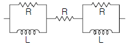
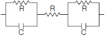
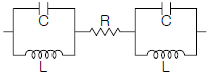
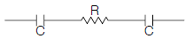
(정답률: 52%)
79. 물체에 정전기가 대전하면 정전에너지를 갖게 되는데 그 관계식은? [단위: W(J), C(F), V(V)]
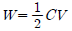
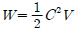
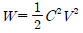
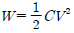
(정답률: 68%)
80. 충전전로에 접근된 장소에서 시설물, 건설, 해체, 점검, 수리 또는 이동식 크레인, 콘트리트 펌프카, 항타기, 항발기등 작업시 감전 위험방지 조치 중 부적당한 것은?
- 해당 충전전로 이설
- 절연용 보호구 착용
- 절연용 방호구 설치
- 감시인 배치
(정답률: 35%)
5과목: 화학설비위험방지기술
81. 다음 중 위험물의 예를 잘못 연결한 것은?
- 물반응성 물질 및 인화성 고체 - 칼륨
- 산화성 액체 및 산화성 고체 - 중크롬산
- 인화성 액체 - 크실렌
- 폭발성 물질 및 유기과산화물 - 알킬리튬
(정답률: 39%)
82. 탱크내 작업 복장의 설명 중 잘못된 것은?
- 작업원은 불필요하게 피부를 노출시키지 말 것
- 작업모를 쓰고 긴팔의 상의를 반듯하게 착용할 것
- 작업복의 바지 속에는 밑을 집어넣지 말 것
- 유지가 부착된 작업복을 착용할 것
(정답률: 55%)
83. 화학설비 또는 그 배관(화학설비 또는 그 배관의 밸브 또는 콕 제외)중 위험물 또는 인화점이 몇 ℃ 이상인 물질이 접촉하는 부분에는 부식에 의한 폭발 또는 화재를 방지하기 위해 부식이 잘 안되는 재료를 사용하거나 도장 등의 조치를 해야 하는가?
- 60℃
- 55℃
- 45℃
- 35℃
(정답률: 52%)
84. 프로판(Propane)이 공기 중에서 연소될 때의 이론혼합비(화학양론조성)는 몇 vol% 인가?
- 5.67%
- 4.03%
- 3.06%
- 2.21%
(정답률: 49%)
85. 유해물 취급상의 안전을 위한 조치사항 중 가장 거리가 먼 것은?
- 작업숙련자 배치
- 유해물 발생원의 봉쇄
- 유해물의 위치, 작업공정 변경
- 작업공정의 은폐와 작업장의 격리
(정답률: 47%)
86. 프로판 및 메탄의 폭발하한계는 각각 2.5, 5.0[vol%]이다. 프로판과 메탄이 3:1의 체적비로 있는 혼합가스의 폭발 하한계는 몇 [vol%]인가?(단, 모든 상태는 상온, 상압 상태이다)
- 약 2.9
- 약 3.3
- 약 3.8
- 약 4.0
(정답률: 41%)
87. 폭풍압이 0.6~0.7[kgf/cm2 ?g] 정도일 때 피해영향을 나타낸 것은?
- 유리창 파손
- 창틀의 파손
- 가옥의 기둥 파손
- 사람의 상해사망
(정답률: 34%)
88. 아세틸렌 용접기에 역화역류의 원인으로서 거리가 먼 것은?
- 토치가 가열되었을 때
- 호스가 필요이상 길 때
- 토치의 성능이 불량할 때
- 토치 끝에 석회분이 끼었을 때
(정답률: 58%)
89. 다음 중 기존 공장의 분리?이송 시스템, 전기·계측 시스템에 대한 위험성을 평가하는데 적절하지 않은 위험성 평가기법은?
- 체크리스트 기법(Check List)
- 위험과 운전분석 기법(HAZOP)
- 이상위험도 분석기법(FMECA)
- 원인결과 분석기법(CCA)
(정답률: 40%)
90. 다음 중 반응 또는 운전압력이 3psig 이상인 경우 압력계를 설치하지 않아도 무관한 것은?
- 반응기
- 탑조류
- 밸브류
- 열교환기
(정답률: 54%)
91. 다음 중 액체산소 중에서 용해도가 가장 큰 물질은?
- CH4
- C2H6
- C3H8
- n-C4H10
(정답률: 46%)
92. 반응기 안전설계시 주요 인자와 관계가 먼 것은?
- 운전압력
- 온도범위
- 상(phase)의 형태
- 액 및 가스의 양의 비율
(정답률: 36%)
93. 다음의 물질 중에서 폭발상한계가 100%인 것은?
- 사이클로 헥산
- 산화에틸렌
- 수소
- 이황화탄소
(정답률: 40%)
94. 다음 그림은 NFPA의 위험성 표시 라벨이다. 황색숫자 3이 나타내는 위험성은?
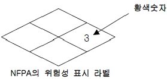
- 중간정도의 위험성을 갖는 화재위험성 물질
- 중간정도의 위험성을 갖는 반응위험성 물질
- 중간정도의 위험성을 갖는 건강위험성 무질
- 중간정도의 위험성을 갖는 방사성 물질
(정답률: 52%)
95. 폭발 또는 화재가 발생할 우려가 있는 건조설비의 구조로 가장 적절하지 않은 것은?
- 위험물 건조설비의 상부는 견고한 구조로 할 것
- 건조설비의 외면은 불연성 재료로 만들 것
- 건조설비의 내부는 청소가 쉬운 구조로 할 것
- 위험물 건조설비의 열원으로서 직화를 사용하지 말 것
(정답률: 57%)
96. 소화효과에 대한 다음의 설명 중 맞지 않는 것은?
- 물에 의한 소화는 냉각효과이다.
- 불연성 가스에 의한 소화는 산소차단효과이다.
- 할로겐화 탄화수소를 사용하는 경우의 주요 소화효과는 산소의 공급 차단에 의한 산소차단효과이다.
- 소화분말을 사용하는 경우의 주요 소화효과는 연소의억제, 냉각, 산소차단의 상승효과이다.
(정답률: 39%)
97. 소화제 중 B급과 C급 화재에 가장 효과적인 것은?
- 물(봉상)
- 화학기포
- 불연성기체
- 산알칼리제
(정답률: 52%)
98. 포스겐가스 누설검지의 시험지로 사용되는 것은?
- 연당지
- 염화파라듐지
- 하리슨시험지
- 초산구리벤젠지
(정답률: 49%)
99. 실험실에서의 화학약품 취급방법으로 옳지 않은 것은?
- 약품의 맛을 보거나, 입으로 피펫을 빨지 않는다.
- 약품명칭이 없는 용기의 약품은 사용하지 않는다.
- 증류수처럼 무해한 것을 포함하여 모든 용기에는 약품의 명칭을 표시한다.
- 적은 양의 수은이 누출되었을 경우에는 즉시 진공청소기로 청소하여야 한다.
(정답률: 73%)
100. 다음 중 폭발방호(Explosion Protection) 대책과 관계가 가장 작은 것은?
- 불활성화(Inserting)
- 폭발억제(Explosion Suppression)
- 폭발방산(Explosion Vending)
- 폭발봉쇄(Containment)
(정답률: 42%)
6과목: 건설안전기술
101. 선창의 내부에서 화물취급 작업을 하는 때에는 갑판의 윗면에서 선창 밑바닥까지 깊이가 몇 m를 초과하는 경우에 당해 작업 근로자가 안전하게 통행할 수 있는 설비를 설치하여야 하는가?
- 1.0m
- 1.2m
- 1.3m
- 1.5m
(정답률: 60%)
102. 양중기에 사용하여서는 안되는 와이어로프의 기준으로 틀린 것은?
- 이음매가 있는 것
- 지름의 감소가 공칭지름의 5%를 초과하는 것
- 와이어로프의 한 꼬임에서 끊어진 소선의 수가 10%이상인 것
- 꼬인 것
(정답률: 60%)
103. 차량계 건설기계를 사용하여 작업시 작업계획에 포함 되어야 할 사항이 아닌 것은?
- 차량계 건설기계의 운행경로
- 차량계 건설기계의 신호방법
- 차량계 건설기계에 의한 작업방법
- 사용하는 차량계 건설기계의 종류 및 성능
(정답률: 41%)
104. 이동식 비계의 안전에 대한 설명 중 부적당한 것은?
- 승강용 사다리는 견고하게 설치한다.
- 비계의 최상부에서 작업을 할 때에는 안전난간을 설치한다.
- 조립시 비계의 최대높이는 밑변 최소폭의 6배 이하여야 한다.
- 최대 적재하중을 명확하게 표시한다.
(정답률: 72%)
1⑤. 동력을 사용하는 항타기 또는 항발기의 도괴를 방지하기 위한 사항으로 틀린 것은?
- 연약한 지반에 설치할 때에는 각부 또는 가대의 침하를 방지하기 위하여 깔판, 깔목 등을 사용한다.
- 평형추를 사용하여 안정시킬 때에는 평형추의 이동을 방지하기 위하여 가대에 견고하게 부착시킨다.
- 버팀대만으로 상단부분을 안정시킬 때에는 버팀대를 3개 이상으로 한다.
- 버팀줄만으로 상단부분을 안정시킬 때에는 버팀줄을 2개 이상으로 한다.
(정답률: 64%)
106. 추락방지용 방망의 그물코가 10cm인 신제품 매듭방망사의 인장강도는 몇 킬로그램 이상이어야 하는가?
- 80
- 110
- 150
- 200
(정답률: 60%)
107. 다음 중 구조물의 보수, 보강공법이 아닌 것은?
- 에폭시 주입공법
- 탄소섬유 부착공법
- 반발경도법
- 강판압착법
(정답률: 54%)
108. 다음 중 일반적으로 사용되는 암질의 판별 기준이 아닌 것은?
- R.Q.D(%)
- 삼축 압축강도(kg/cm2)
- R.M.R(%)
- 탄성파 속도(kine)
(정답률: 30%)
109. 추락의 위험이 있는 경우 안전방망을 설치할 때 일반적으로 방망 지지점은 몇 킬로그램의 외력에 견딜 수 있는 강도를 보유하여야 하는가?
- 400
- 500
- 600
- 700
(정답률: 42%)
110. 5m 이상의 강관틀비계의 벽이음 설치간격의 기준으로 옳은 것은?
- 수직방향 5m, 수평방항 5m 이내마다
- 수직방향 6m, 수평방항 8m 이내마다
- 수직방향 7m, 수평방항 9m 이내마다
- 수직방향 8m, 수평방항 10m 이내마다
(정답률: 51%)
111. 굴착과 싣기를 동시에 할 수 있는 토공기계가 아닌 것은?
- 트랙터 셔블(tractor shovel)
- 백호(back hoe)
- 파워 셔블(power shovel)
- 모터 그레이더(motor grader)
(정답률: 62%)
112. 지반을 굴착할 때 굴착면의 기울기 기준이 맞지 않는 것은?(2021년 11월 19일 개정된 규정 적용됨)
- 보통흙 습지 1:1~1:1.5
- 보통흙 건지 1:0.5~1:1
- 풍화암 1:0.8
- 경암 1:0.5
(정답률: 59%)
113. 철근의 이음법이 아닌 것은?
- 겹침이음
- 용접이음
- 기계적이음
- 화학적이음
(정답률: 60%)
114. 유해·위험방지계획서 제출시 첨부서류가 아닌 것은?
- 공사현장의 주변상황 및 주변과의 관계를 나타내는 도면
- 공사개요서
- 전체공정표
- 작업인부의 배치를 나타내는 도면 및 서류
(정답률: 55%)
115. 콘크리트 타설시 거푸집의 측압에 영향을 미치는 인자들에 대한 설명 중 적당 하지 않은 것은?
- 슬럼프가 클수록 작다
- 타설속도가 빠를수록 크다
- 거푸집 속의 콘크리트 온도가 낮을수록 크다
- 콘크리트의 높이가 높을수록 크다
(정답률: 55%)
116. 콘크리트 코어채취 공시체의 지름이 15cm, 높이가 30cm 일 때 압축시험 결과 35000kg에서 파괴 되었다면 압축강도는?
- 190kg/cm2
- 198kg/cm2
- 77.8kg/cm2
- 49.5kg/cm2
(정답률: 42%)
117. 다음 중 차량계 건설기계가 아닌 것은?
- 모터그레이더
- 브레이커
- 어스드릴
- 롤러
(정답률: 34%)
118. 콘크리트의 워커빌리티(workability)를 측정하는 시험방법과 관계가 없는 것은?
- 슬럼프시험(Slump test)
- 베인시험(Vane test)
- 흐름시험(Flow test)
- 캐리볼관입시험(Kelly Ball Penetration test)
(정답률: 46%)
119. 흙막이 지보공을 설치한 때에 정기적으로 점검하고 이상을 발견한 때에 즉시 보수하여야 하는 사항이 아닌 것은?
- 부재의 손상, 변형, 변위, 및 탈락의 유무와 상태
- 부재의 접속부, 부착부 및 교차부 상태
- 침하의 정도
- 작업 중 안전대 및 안전모 등 보호구 착용 상황 감시
(정답률: 55%)
120. 다음 중 철골공사에서 작업중지 풍속 조건이 기준은?
- 초당 20m 이상
- 초당 15m 이상
- 초당 13m 이상
- 초당 10m 이상
(정답률: 49%)